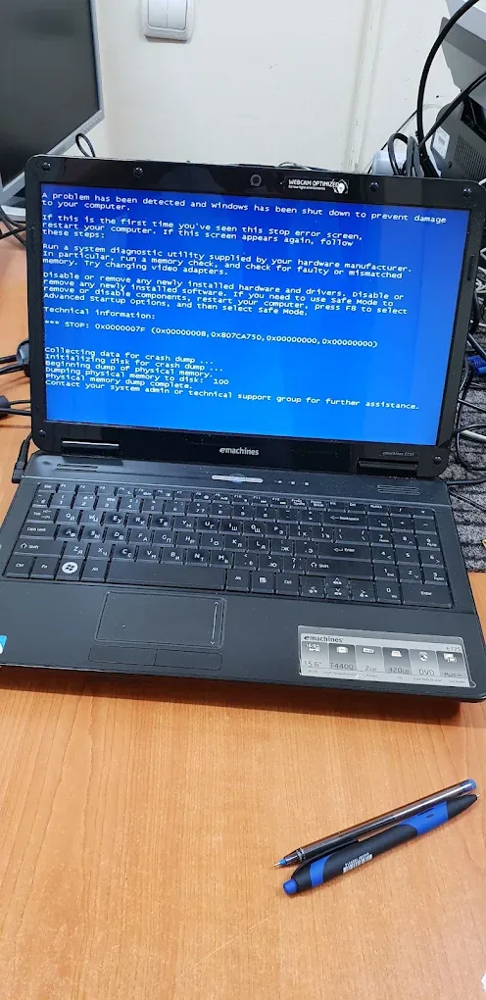

Перед восстановлением системы скажите мастеру, какие файлы важны: при необходимости их скопируют перед работой.
Устанавливаем программы по вашему списку — 100 лей за типовую установку, от 200 лей за большой набор.
Восстанавливаем работу Windows и Linux, удаляем вирусы, устанавливаем нужные программы, размечаем и форматируем диски.
Перед восстановлением системы скажите мастеру, какие файлы важны: при необходимости их скопируют перед работой.
Устанавливаем программы по вашему списку — 100 лей за типовую установку, от 200 лей за большой набор.

Стоимость работ по прайсу сервиса. Точную цену мастер назовёт после диагностики.
| Услуга, лей | Средне | Сложно | |
|---|---|---|---|
| Восстановление работы Windows | 350 | ||
| Восстановление работы Linux | 350 | ||
| Удаление вирусов | от200 | ||
| Установка программ по списку клиента | 100 | от200 | |
| Форматирование и разметка дисков | от150 |
Приходите в сервис или сначала позвоните — подскажем, что взять с собой.
Мастер находит причину неисправности и называет точную стоимость ремонта.
Решаете вы. Если соглашаетесь на ремонт — диагностика бесплатна.
Ремонтируем, проверяем работу и сообщаем, когда можно забрать технику.
Восстановление работы Windows или Linux — 350 лей.
Да, удаление вирусов — от от 200 лей. Если система повреждена слишком сильно, мастер предложит восстановление.
Позвоните или напишите в мессенджер. Точную цену мастер назовёт после диагностики.